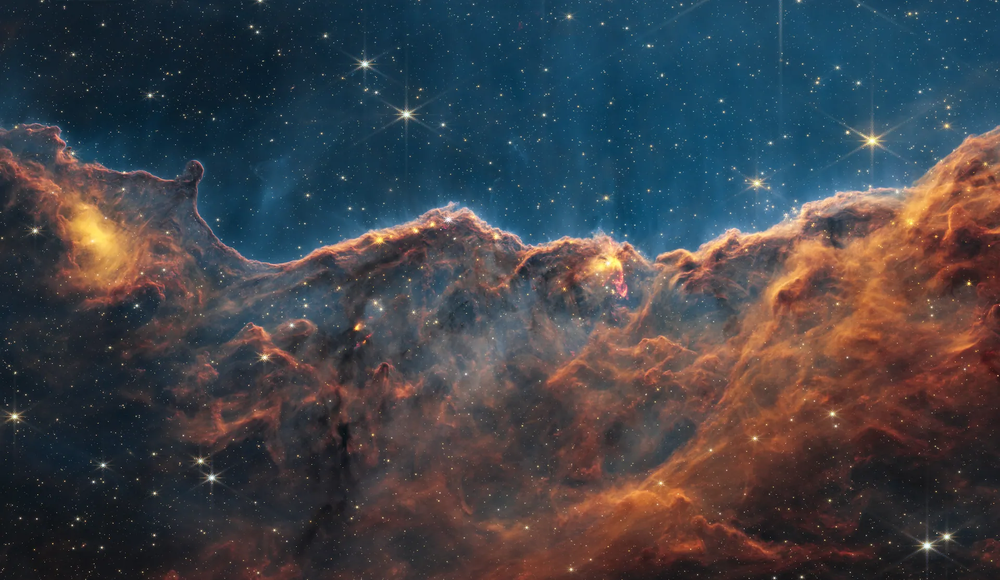

Atlas de mundos
Cada obra de Nébula es un mundo con nombre propio.
El viaje
Nébula lleva sus mundos al cine. Un fragmento de su último corto.
Escucha un mundo
Cada serie de Nébula tiene su propio paisaje sonoro.
¿Imaginas un mundo?
Nébula acepta encargos de paisajes, portadas y piezas audiovisuales.
nebula@example.com